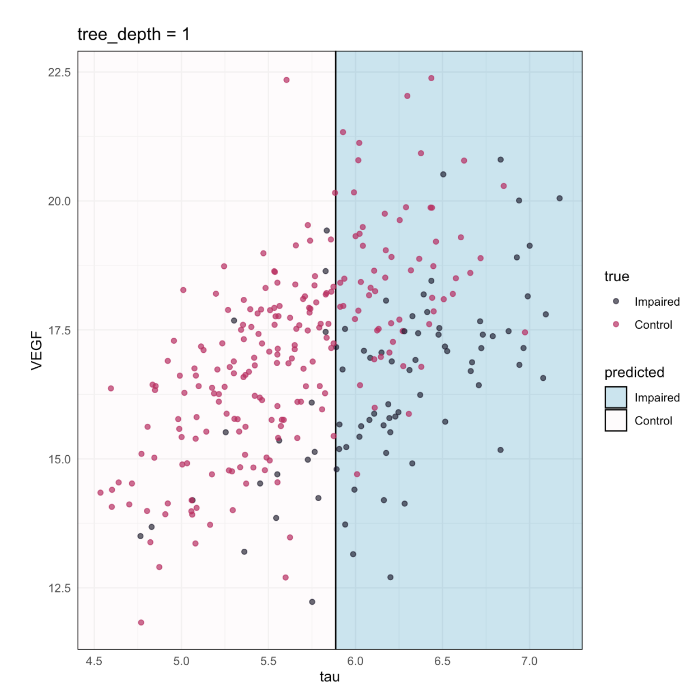
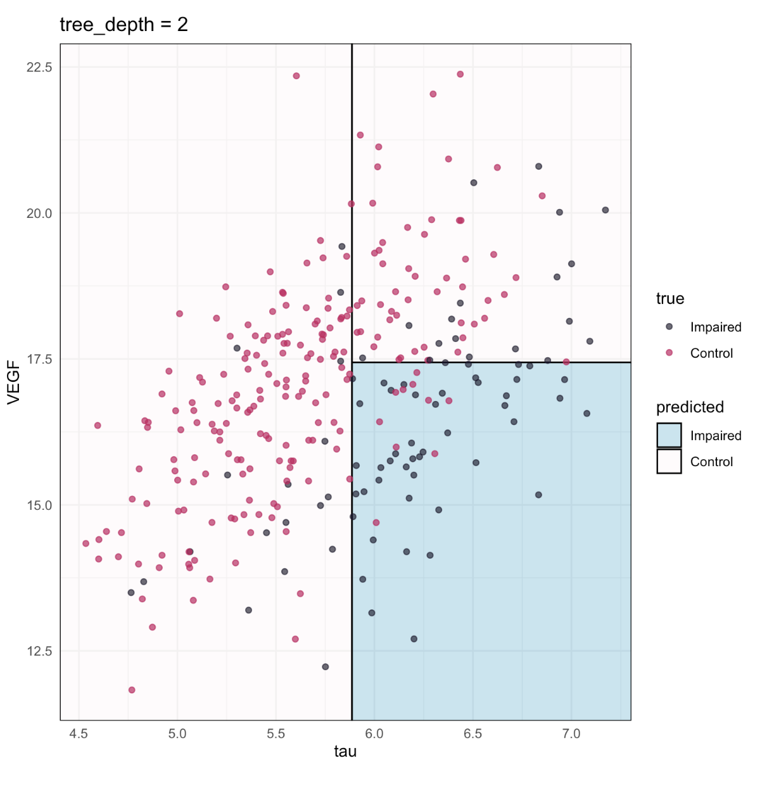
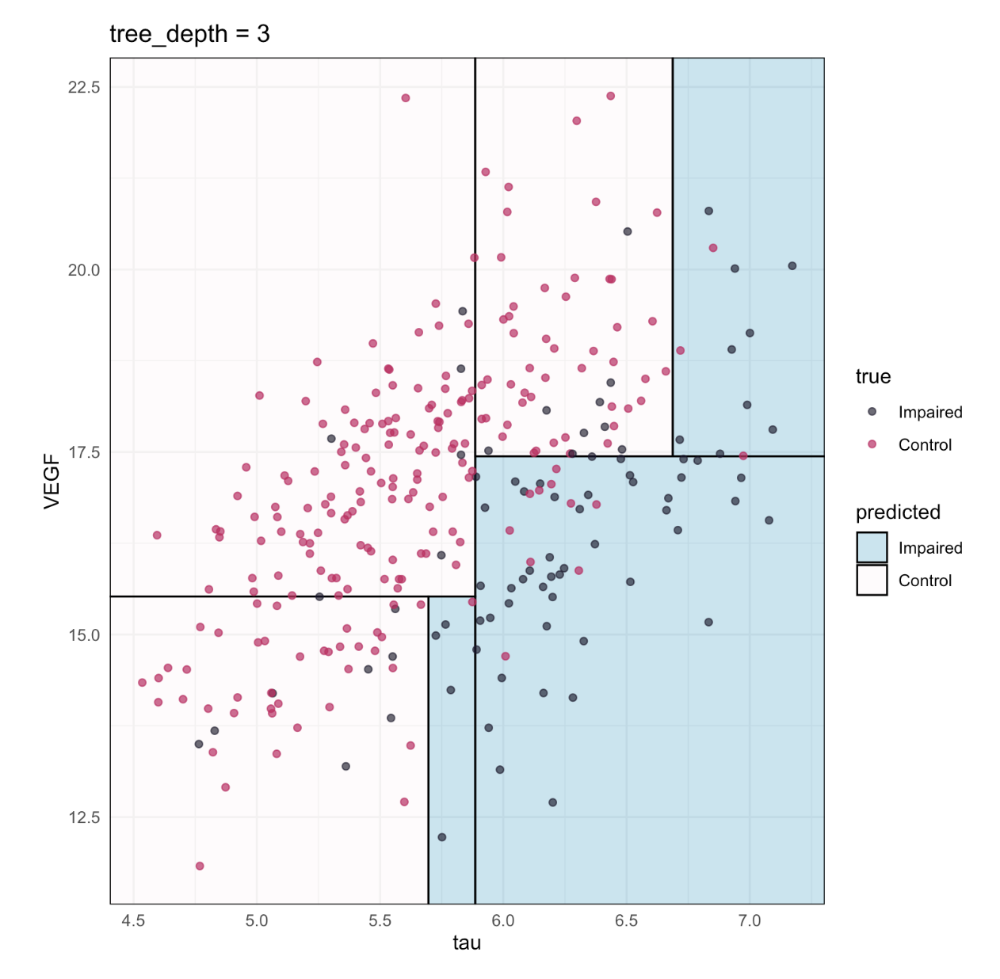
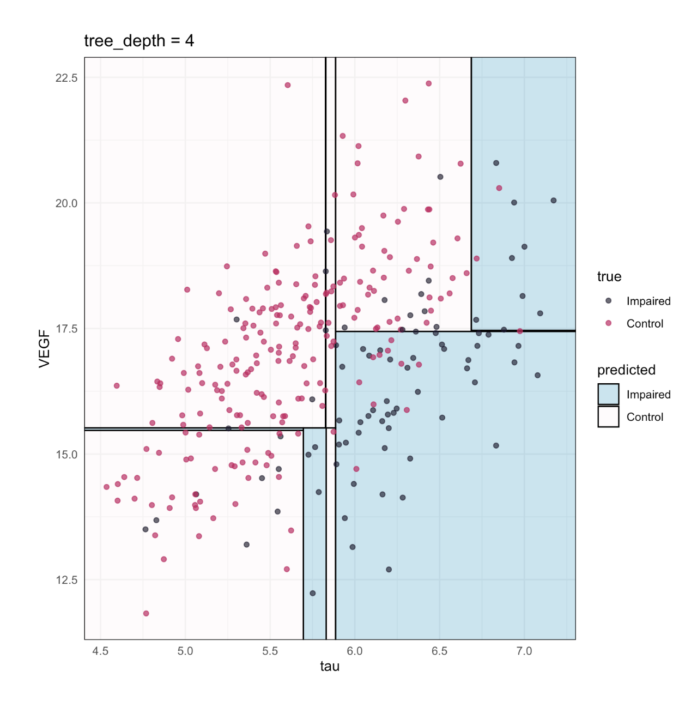
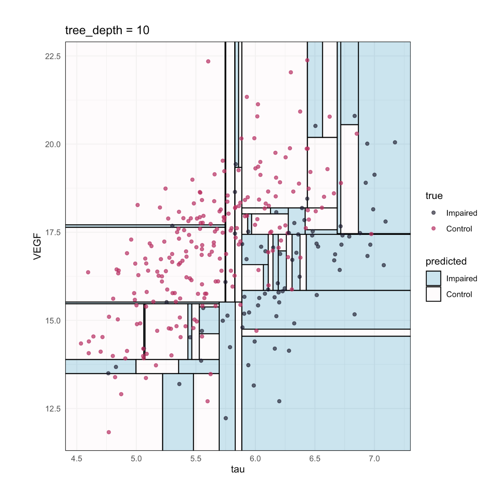
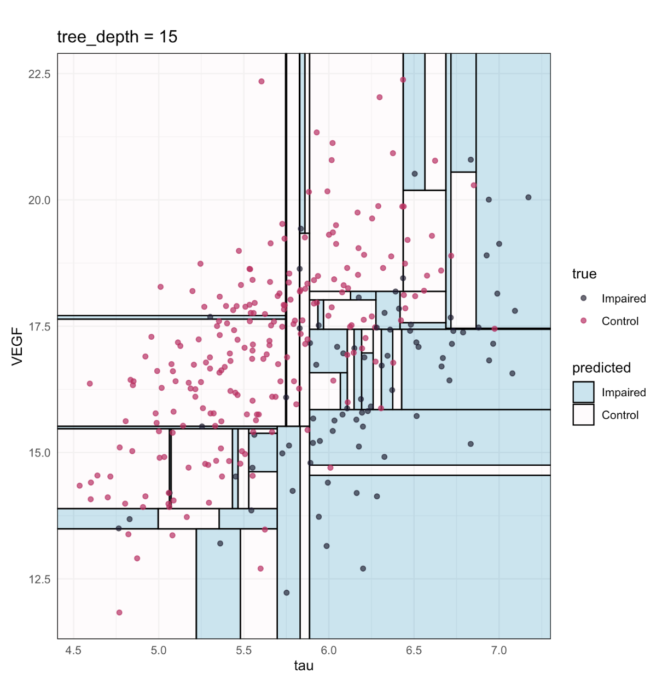
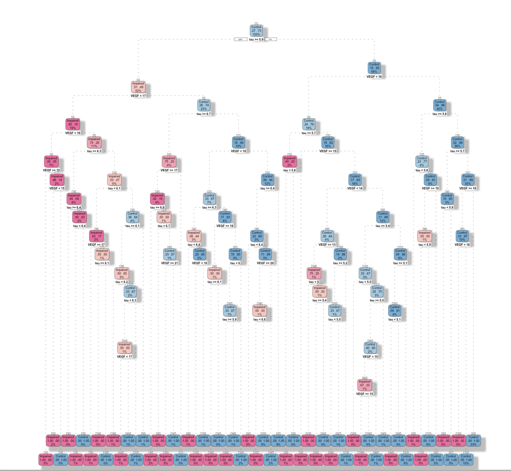

Árboles de Decisión usando tidymodels
Catalina Cañizares, Ph.D. y Francisco Cardozo Ph.D.
Árboles de Decisión usando tidymodels© 2024 por Catalina Canizares y Francisco Cardozo está licenciado bajo Creative Commons Attribution-NonCommercial-NoDerivatives 4.0 International
Este material está disponible libremente bajo la Licencia Creative Commons Attribution-NonCommercial-NoDerivatives 4.0 International.
Para más información sobre esta licencia, por favor visite: Licencia Creative Commons
Agenda 🌲
🌲 Árboles de Decisión
🌲 Conceptos básicos (Raíz, Característica, Hoja)
🌲 Ver y entender las divisiones
🌲 Entropía y Ganancia de Información
🌲 Detención temprana y Poda
🌲 Un árbol en tidymodels
Árboles
🌲 Los Árboles de Decisión son algoritmos ampliamente utilizados para aprendizaje supervisado.
🌲 Proporcionan modelos interpretables para hacer predicciones tanto en tareas de regresión como de clasificación.
Cómo funciona
🌲 Consiste en una serie de decisiones secuenciales sobre las características de algún conjunto de datos.
Cómo se ven las Divisiones

Cómo se ven las Divisiones

Cómo se ven las Divisiones

Cómo se ven las Divisiones

Cómo se ven las Divisiones

Cómo se ven las Divisiones

Cómo se ven las Divisiones

¿Cómo determina el algoritmo dónde particionar los datos?
🌲 En lugar de minimizar la Suma de Errores al Cuadrado, puedes minimizar la entropía….
🌲 Entropía = mide la cantidad de información de alguna variable o evento.
🌲 La usaremos para identificar regiones que consisten en
Árboles de clasificación
🌲 Una de las preguntas que surge en un algoritmo de árbol de decisión es: ¿cuál es el tamaño óptimo del árbol final?
🌲 Un árbol que es demasiado grande corre el riesgo de sobreajustar los datos de entrenamiento y generalizar mal a nuevas muestras.
🌲 Un árbol pequeño podría no capturar información estructural importante sobre el espacio de muestras.
🌲 Sin embargo, es difícil saber cuándo un algoritmo de árbol debe detenerse!
tree_depth
🌲 Limita la profundidad máxima del árbol.
🌲 Un método para detener el árbol tempranamente.
🌲 Se usa para prevenir el sobreajuste.
min_n
🌲 Un entero para el número mínimo de puntos de datos en un nodo que se requieren para que el nodo se divida más.
🌲 Establece el n mínimo para dividir en cualquier nodo.
🌲 Otro método de detención temprana.
🌲 Se usa para prevenir el sobreajuste.
🌲 min_n = 1 llevaría al árbol más sobreajustado.
cost_complexity - poda del árbol
🌲 Añade un costo o penalización a las tasas de error de árboles más complejos
🌲 Se usa para prevenir el sobreajuste.
🌲 Más cercano a cero ➡️ árboles más grandes.
🌲 Penalización más alta ➡️ árboles más pequeños.
cost_complexity
\[
R_\alpha(T) = R(T) + \alpha|\widetilde{T}|
\] 🌲 \(R(T)\) tasa de clasificación errónea
🌲 Para cualquier subárbol \(T<T_{max}\) definiremos su complejidad como \(|\widetilde{T}|\)
🌲 \(|\widetilde{T}|\) = el número de nodos terminales u hojas en T.
🌲 \(\alpha ≤0\) sea un número real llamado el parámetro de complejidad.
🌲 Si \(\alpha\) = 0 entonces se elegirá el árbol más grande porque el término de penalización por complejidad esencialmente se elimina.
🌲 A medida que \(\alpha\) se acerca al infinito, se seleccionará el árbol de tamaño 1.
Árbol de Clasificación con tidymodels
Tarea
Predecir si un adolescente ha consumido alcohol o no basándose en un conjunto de varios comportamientos de riesgo.
Limpieza de Datos
data ("riskyBehaviors" )<- |> mutate (UsedAlcohol = case_when (== 1 ~ 0 ,%in% c (2 , 3 , 5 , 6 , 4 , 7 ) ~ 1 ,TRUE ~ NA |> mutate (UsedAlcohol = factor (UsedAlcohol)) |> drop_na (UsedAlcohol) |> select (- c (
División de los datos
set.seed (2023 )<- initial_split (riskyBehaviors_analysis, strata = UsedAlcohol)<- training (alcohol_split)<- testing (alcohol_split)
<Training/Testing/Total>
<9889/3297/13186>
Verifiquemos Nuestro Trabajo
|> tabyl (UsedAlcohol) |> adorn_pct_formatting (0 ) |> adorn_totals ()
UsedAlcohol n percent
0 4354 44%
1 5535 56%
Total 9889 -
|> tabyl (UsedAlcohol) |> adorn_pct_formatting (0 ) |> adorn_totals ()
UsedAlcohol n percent
0 1452 44%
1 1845 56%
Total 3297 -
Creando el Objeto de Remuestreo
set.seed (2023 )<- rsample:: vfold_cv (alcohol_train, strata = UsedAlcohol)
# 10-fold cross-validation using stratification
# A tibble: 10 × 2
splits id
<list> <chr>
1 <split [8899/990]> Fold01
2 <split [8899/990]> Fold02
3 <split [8899/990]> Fold03
4 <split [8899/990]> Fold04
5 <split [8900/989]> Fold05
6 <split [8901/988]> Fold06
7 <split [8901/988]> Fold07
8 <split [8901/988]> Fold08
9 <split [8901/988]> Fold09
10 <split [8901/988]> Fold10
La Receta
<- recipe (formula = UsedAlcohol ~ ., data = alcohol_train) |> step_impute_mode (all_nominal_predictors ()) |> step_impute_mean (all_numeric_predictors ())
La Especificación
<- decision_tree (cost_complexity = tune (),tree_depth = tune (),min_n = tune ()|> set_engine ("rpart" ) |> set_mode ("classification" )
Decision Tree Model Specification (classification)
Main Arguments:
cost_complexity = tune()
tree_depth = tune()
min_n = tune()
Computational engine: rpart
El Flujo de Trabajo
<- workflow () |> add_recipe (alcohol_recipe) |> add_model (cart_spec)
══ Workflow ════════════════════════════════════════════════════════════════════
Preprocessor: Recipe
Model: decision_tree()
── Preprocessor ────────────────────────────────────────────────────────────────
2 Recipe Steps
• step_impute_mode()
• step_impute_mean()
── Model ───────────────────────────────────────────────────────────────────────
Decision Tree Model Specification (classification)
Main Arguments:
cost_complexity = tune()
tree_depth = tune()
min_n = tune()
Computational engine: rpart
Ajuste del árbol - La Cuadrícula
<- grid_regular (cost_complexity (), tree_depth (c (2 , 5 )), min_n (), levels = 4 )
# A tibble: 64 × 3
cost_complexity tree_depth min_n
<dbl> <int> <int>
1 0.0000000001 2 2
2 0.0000001 2 2
3 0.0001 2 2
4 0.1 2 2
5 0.0000000001 3 2
6 0.0000001 3 2
7 0.0001 3 2
8 0.1 3 2
9 0.0000000001 4 2
10 0.0000001 4 2
# ℹ 54 more rows
Ajuste del árbol
:: registerDoParallel ()<- %>% tune_grid (resamples = cv_alcohol,grid = tree_grid,metrics = metric_set (roc_auc),control = control_grid (save_pred = TRUE ):: stopImplicitCluster ()
Eligiendo el mejor CP
show_best (cart_tune, metric = "roc_auc" )
# A tibble: 5 × 9
cost_complexity tree_depth min_n .metric .estimator mean n std_err
<dbl> <int> <int> <chr> <chr> <dbl> <int> <dbl>
1 0.0000000001 5 2 roc_auc binary 0.834 10 0.00520
2 0.0000001 5 2 roc_auc binary 0.834 10 0.00520
3 0.0000000001 5 40 roc_auc binary 0.834 10 0.00484
4 0.0000001 5 40 roc_auc binary 0.834 10 0.00484
5 0.0001 5 40 roc_auc binary 0.834 10 0.00484
# ℹ 1 more variable: .config <chr>
Eligiendo los mejores hiperparámetros
<- autoplot (cart_tune)
Eligiendo el mejor CP
<- select_best (metric = "roc_auc"
# A tibble: 1 × 4
cost_complexity tree_depth min_n .config
<dbl> <int> <int> <chr>
1 0.0000000001 5 2 Preprocessor1_Model13
Finalizando el Flujo de Trabajo
<- finalize_workflow (cart_workflow, best_cart)
══ Workflow ════════════════════════════════════════════════════════════════════
Preprocessor: Recipe
Model: decision_tree()
── Preprocessor ────────────────────────────────────────────────────────────────
2 Recipe Steps
• step_impute_mode()
• step_impute_mean()
── Model ───────────────────────────────────────────────────────────────────────
Decision Tree Model Specification (classification)
Main Arguments:
cost_complexity = 1e-10
tree_depth = 5
min_n = 2
Computational engine: rpart
Ajustar el árbol
<- fit (
══ Workflow [trained] ══════════════════════════════════════════════════════════
Preprocessor: Recipe
Model: decision_tree()
── Preprocessor ────────────────────────────────────────────────────────────────
2 Recipe Steps
• step_impute_mode()
• step_impute_mean()
── Model ───────────────────────────────────────────────────────────────────────
n= 9889
node), split, n, loss, yval, (yprob)
* denotes terminal node
1) root 9889 4354 1 (0.44028719 0.55971281)
2) Vaping=0 5109 1608 0 (0.68526130 0.31473870)
4) AgeFirstMarihuana< 1.5 4397 1086 0 (0.75301342 0.24698658)
8) AgeFirstCig< 2.5 4282 1003 0 (0.76576366 0.23423634)
16) TextingDriving< 2.659047 3911 844 0 (0.78419841 0.21580159) *
17) TextingDriving>=2.659047 371 159 0 (0.57142857 0.42857143)
34) DrivingDrinking< 2.5 363 151 0 (0.58402204 0.41597796) *
35) DrivingDrinking>=2.5 8 0 1 (0.00000000 1.00000000) *
9) AgeFirstCig>=2.5 115 32 1 (0.27826087 0.72173913)
18) Grade=12,9 53 21 1 (0.39622642 0.60377358)
36) Race=Hispanic/Latino,Native Hawaiian/Other PI 5 1 0 (0.80000000 0.20000000) *
37) Race=Asian,Black or African American,Multiple-Hispanic,Multiple-Non-Hispanic,White 48 17 1 (0.35416667 0.64583333) *
19) Grade=10,11 62 11 1 (0.17741935 0.82258065) *
5) AgeFirstMarihuana>=1.5 712 190 1 (0.26685393 0.73314607)
10) AgeFirstCig< 1.423554 448 162 1 (0.36160714 0.63839286)
20) AgeFirstMarihuana< 2.809703 59 24 0 (0.59322034 0.40677966)
40) TextingDriving< 2.659047 52 17 0 (0.67307692 0.32692308) *
41) TextingDriving>=2.659047 7 0 1 (0.00000000 1.00000000) *
21) AgeFirstMarihuana>=2.809703 389 127 1 (0.32647815 0.67352185) *
11) AgeFirstCig>=1.423554 264 28 1 (0.10606061 0.89393939) *
3) Vaping=1 4780 853 1 (0.17845188 0.82154812)
6) AgeFirstMarihuana< 1.5 1658 556 1 (0.33534379 0.66465621)
12) SourceVaping=1 937 396 1 (0.42262540 0.57737460)
24) SexualAbuseByPartner< 1.884927 450 220 0 (0.51111111 0.48888889)
48) AgeFirstCig< 5.5 424 198 0 (0.53301887 0.46698113) *
49) AgeFirstCig>=5.5 26 4 1 (0.15384615 0.84615385) *
25) SexualAbuseByPartner>=1.884927 487 166 1 (0.34086242 0.65913758) *
13) SourceVaping=2,3,4,5,6,7,8 721 160 1 (0.22191401 0.77808599) *
7) AgeFirstMarihuana>=1.5 3122 297 1 (0.09513133 0.90486867) *
Revisar el ajuste en los datos de entrenamiento
<- augment (cart_fit, alcohol_train) |> select (UsedAlcohol, .pred_class, .pred_1, .pred_0)
# A tibble: 9,889 × 4
UsedAlcohol .pred_class .pred_1 .pred_0
<fct> <fct> <dbl> <dbl>
1 0 1 0.905 0.0951
2 0 0 0.216 0.784
3 0 0 0.216 0.784
4 0 0 0.216 0.784
5 0 1 0.905 0.0951
6 0 0 0.467 0.533
7 0 0 0.216 0.784
8 0 0 0.216 0.784
9 0 0 0.416 0.584
10 0 0 0.216 0.784
# ℹ 9,879 more rows
Revisar el ajuste en los datos de entrenamiento
<- |> roc_curve (truth = UsedAlcohol, .pred_1, event_level = "second" ) |> autoplot ()
|> roc_auc (truth = UsedAlcohol, event_level = "second" )
# A tibble: 1 × 3
.metric .estimator .estimate
<chr> <chr> <dbl>
1 roc_auc binary 0.838
Revisión en Remuestras
fit_resamples (cart_final_wf, resamples = cv_alcohol) |> collect_metrics ()
# A tibble: 3 × 6
.metric .estimator mean n std_err .config
<chr> <chr> <dbl> <int> <dbl> <chr>
1 accuracy binary 0.786 10 0.00439 pre0_mod0_post0
2 brier_class binary 0.156 10 0.00270 pre0_mod0_post0
3 roc_auc binary 0.834 10 0.00520 pre0_mod0_post0
El árbol
|> extract_fit_engine () |> :: rpart.plot (roundint = FALSE )
Continuará…
Este modelo aún no ha sido probado, ya que planeamos realizar un análisis adicional. En la próxima presentación, utilizaremos los mismos datos de entrenamiento con el algoritmo Random Forest, seguido de la evaluación de su rendimiento usando el conjunto de prueba.